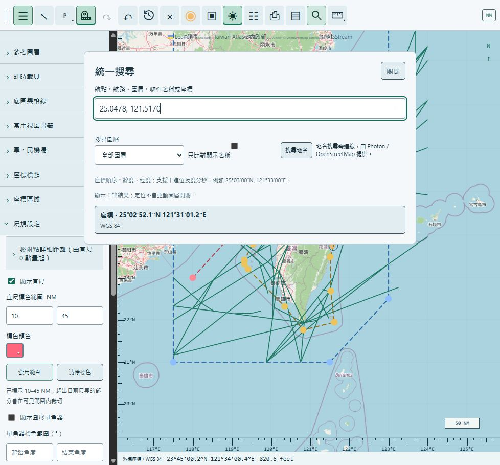
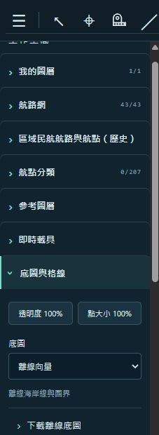
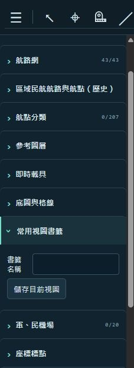
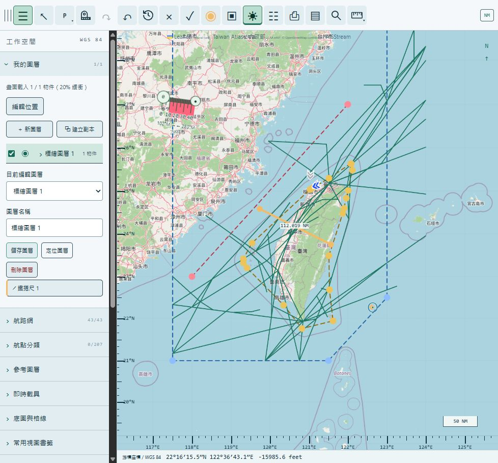
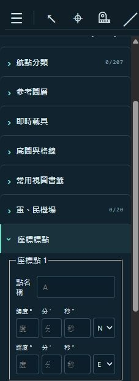
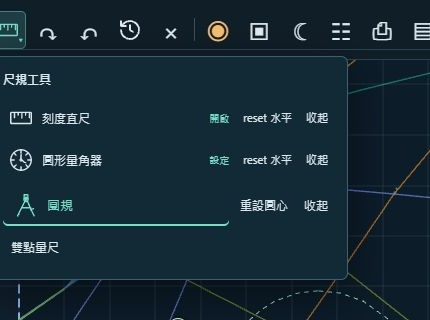
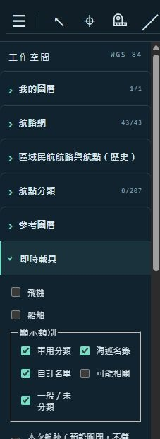
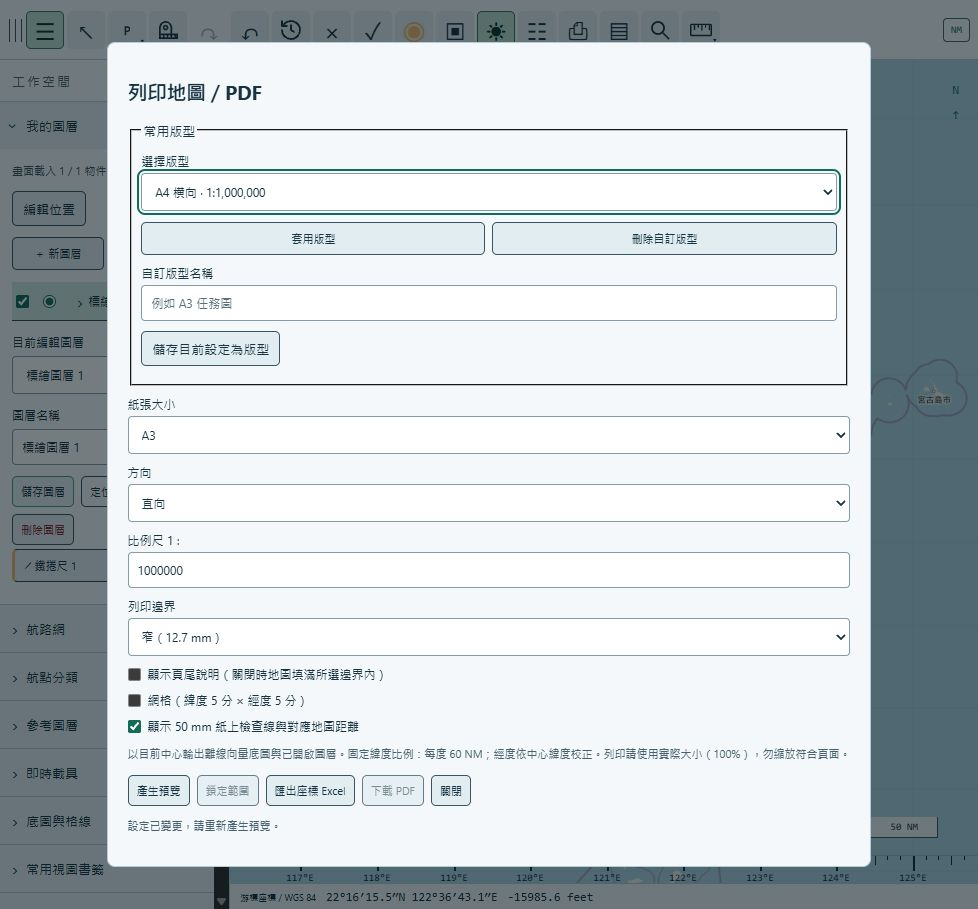
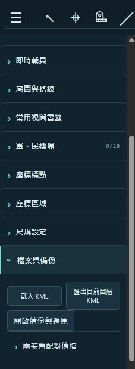

平移、縮放與選取
平移／選取
在哪裡開啟上方工具列 › 平移／選取（斜箭頭）
- 用一指拖曳地圖，雙指張合縮放。要修訂標繪，先回到平移／選取，再點物件。
- 電腦可用滾輪縮放、移動游標讀取座標。若地圖下方看不到座標，可到「設定」檢查游標顯示方式。

手機可點「全螢幕開啟 MPS」。首次使用請依畫面提示解鎖。此處會使用同一瀏覽器的專案，練習前可先建立空白專案。
在哪裡開啟上方工具列 › 平移／選取（斜箭頭）
在哪裡開啟上方工具列 › 放大鏡；或側欄 ☰ › 座標標點

有網路時可勾選「搜尋地名」。也可輸入「設定」或「底圖與格線」等工具名稱，從搜尋結果直達面板。
在哪裡開啟上方 ☰ › 底圖與格線；顯示細節在「設定」

在哪裡開啟側欄 ☰ › 常用視圖書籤
先調好地圖範圍、底圖與圖層，再輸入名稱並點「儲存目前視圖」。下次選書籤可回到已儲存的地圖視圖。

選區域並勾選航路或航點，載入後放大到第 7 級查看。資料為 AIRAC 2013.10，供歷史比對。
按「建立此航路可修改副本」，再到「我的圖層」編輯副本的頂點、名稱或樣式。
在哪裡開啟上方 ☰ › 我的圖層 › 新圖層／建立副本／定位圖層

在哪裡開啟上方工具列 › 新增標記／繪製線段／繪製區域／自由繪圖／標繪顏色
在哪裡開啟上方工具列 › 平移／選取 › 點自己的標繪 › 側欄「修訂詳細資料」

依物件類型選擇線型、設定點半徑，或在線段上加入等距記號。套用前可併同檢查頂點座標。
依名稱選一個母點。移動母點時，跟隨的頂點也會移動。若頂點是捲尺端點，距離會重新計算。
開啟清單並選取要回到的步驟。清單會區分已執行與已復原的操作。
先在「設定」開啟尺規吸附，並顯示想對齊的航點或標記。看到鎖定圖示才表示已吸附。點選影片下的步驟可停在該畫面。
在哪裡開啟上方工具列 › 鐵捲尺（捲尺圖示）
展開尺規設定
在哪裡開啟尺規工具 › 雙點量尺
雙指在地圖兩個位置按住約 1 秒即可開始量測。也可從選單開啟後拖動兩端。到「設定 › 量尺航向基準」切換磁航向 M 或真航向 T。

在 MPS 顯示側欄 ☰ › 即時載具 › 飛機
連線後開啟圖層，點地圖上的航機查看資料。MPS 的飛機來源為 ADS-B，可另外開啟 Flightradar24 交叉查閱公開航班資訊。
開啟 Flightradar24
在 MPS 顯示側欄 ☰ › 即時載具 › 船舶
點船舶標記查看識別資訊，展開「船舶類型圖例」核對顏色。需要時可開啟「本次航跡」。
查看 AISStream 資料來源在哪裡開啟上方工具列 › 列印／PDF

常用的紙張、比例尺和邊界可儲存為版型，隨專案備份帶走。
將預覽移到所需範圍，再匯出已開啟經緯度顯示的物件與各點名稱。
在哪裡開啟上方工具列 › 磁碟圖示「備份與還原」；或側欄 ☰ › 檔案與備份

選檔後勾選要加入的物件或要套用的設定，再確認匯入。已存在的物件若再次勾選，會建立副本。
若部署已設定 Google 同步，可依畫面登入。用「找回舊版圖層與設定」選擇舊工作區或備份，只還原需要的圖層與設定。
選定範圍與解析度後下載。可到「離線就緒檢查」確認是否需要補下地形圖磚。
先下載底圖，再用「離線就緒檢查」核對範圍和地形解析度。出發前可切到離線底圖，確認需要的區域能顯示。
先在「設定 › 額外功能」依提示開啟打包功能，下載可完整解壓的離線包。Windows 可從包內的 MPS-Offline.exe 啟動。
可查看安裝及本機資料保留狀態，點程式版本檢查更新。
編輯位置可重排工具與側欄區段，常用工具列可將常用命令保留在外面。標籤字體、密度、主題和移動搖桿透明度也可調整。
可分別設定距離、高度及經緯度的顯示精度。座標可切換十進位或度分秒，游標資訊可設在右側、地圖下方或關閉。
MPS 支援離線使用。請先在連線時開啟正式工作空間並完成離線準備。底圖可能需另行下載。
進入工作空間後，使用上方的備份與還原工具下載專案 JSON。換裝置時可匯入這個檔案。
想建議新功能，或遇到操作問題？請留下你使用的工具、操作步驟，以及看到的結果。若希望收到回覆，可以留下電子郵件。